Demo Presentation
Career Mission AI
취업 준비생이 스펙을 입력하고, AI 분석과 맞춤 미션을 거쳐 포트폴리오까지 정리하는 서비스입니다.
React + Vite
Express
Prisma
PostgreSQL
JWT
취업 준비생이 스펙을 입력하고, AI 분석과 맞춤 미션을 거쳐 포트폴리오까지 정리하는 서비스입니다.
목표 직무에 맞게 준비하고 있는지 확인하기 어렵고, 결과물을 포트폴리오로 연결하는 과정도 혼자 하기 어렵습니다.
현재 준비 상태가 목표 직무 기준으로 어느 정도인지 알기 어렵습니다.
공부한 내용을 어떤 결과물로 만들어야 할지 애매합니다.
혼자 만든 결과물을 어떻게 보완해야 하는지 확인하기 어렵습니다.
수행 경험을 자기소개서나 면접에서 말할 수 있게 구조화해야 합니다.
단순히 분석 결과만 보여주는 것이 아니라, 실제로 할 미션을 추천하고 결과물을 취업 준비 자료로 남기는 흐름입니다.
사용자 계정과 인증 상태를 만들고 보호 페이지 접근을 제어합니다.
전공, 학점, 경험, 기술, 목표 직무를 분석 기준 데이터로 저장합니다.
추천 미션을 수행하고 링크, 설명, 파일 UI로 결과물을 제출합니다.
제출 결과물을 평가하고 프로젝트 경험 형태로 다시 정리합니다.
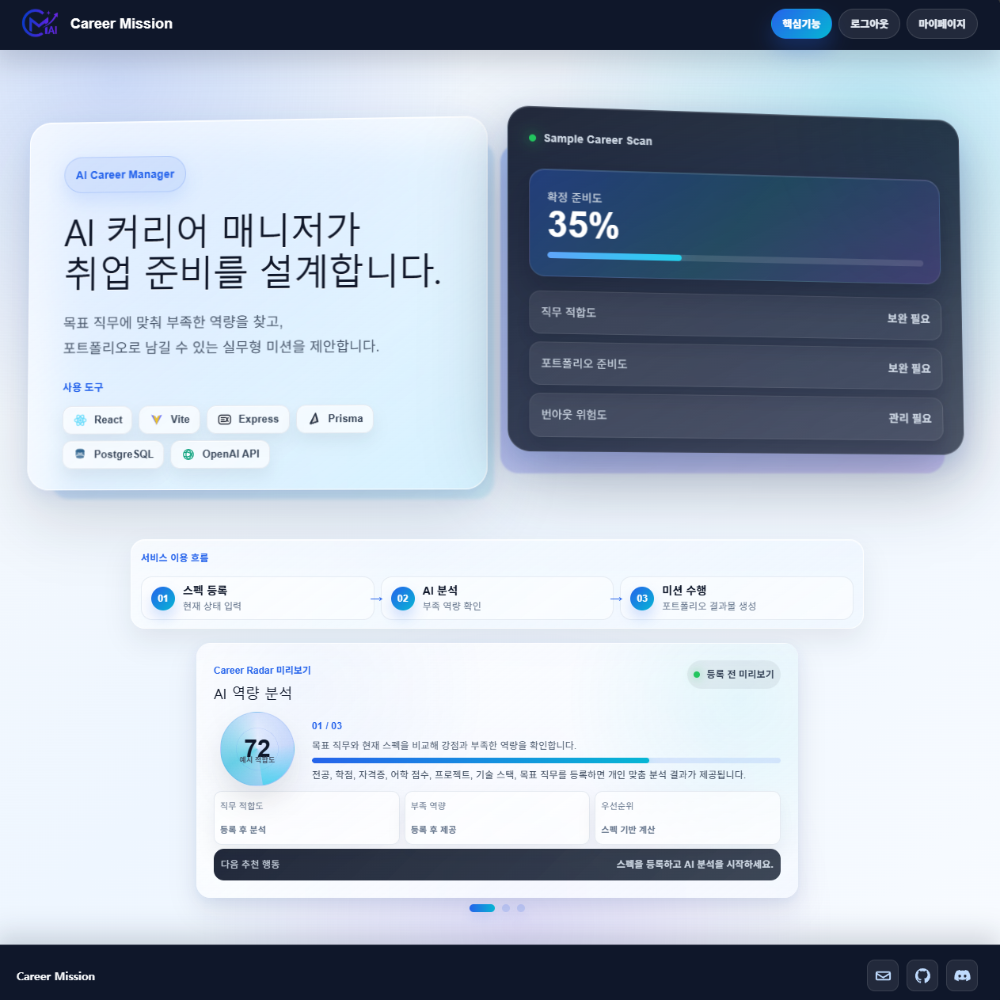
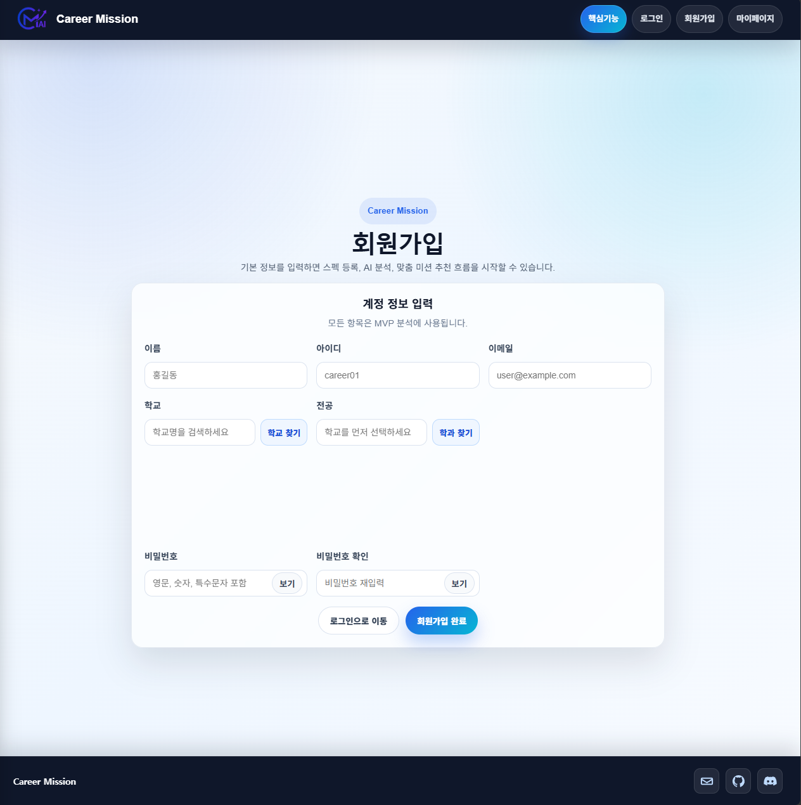
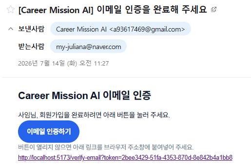
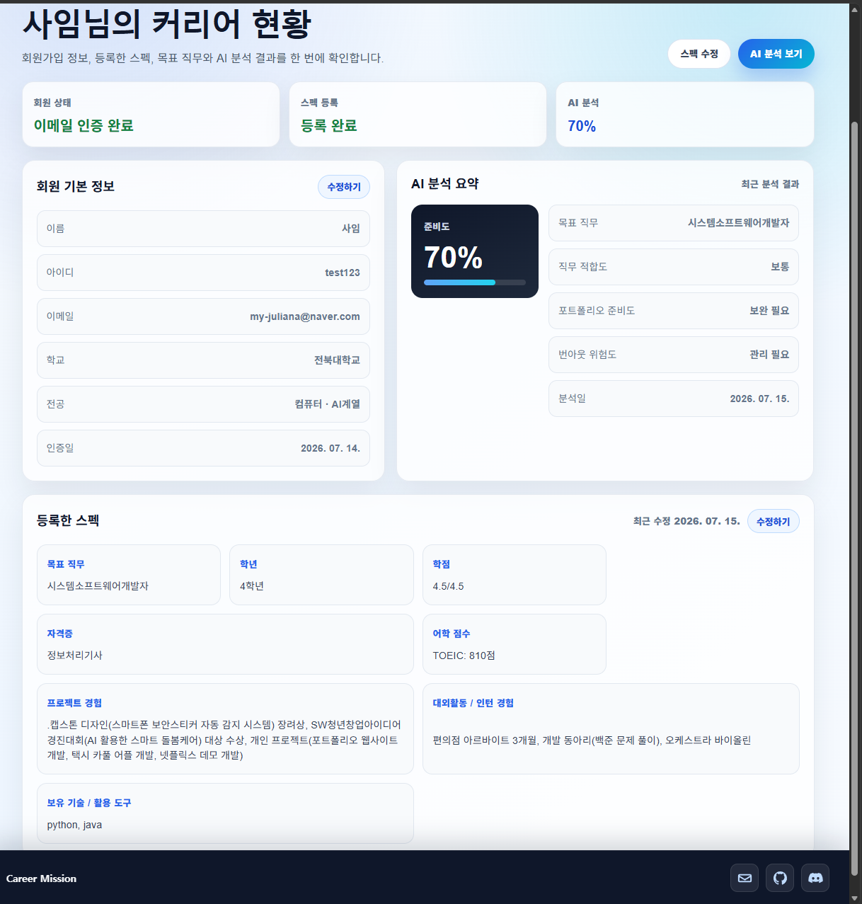
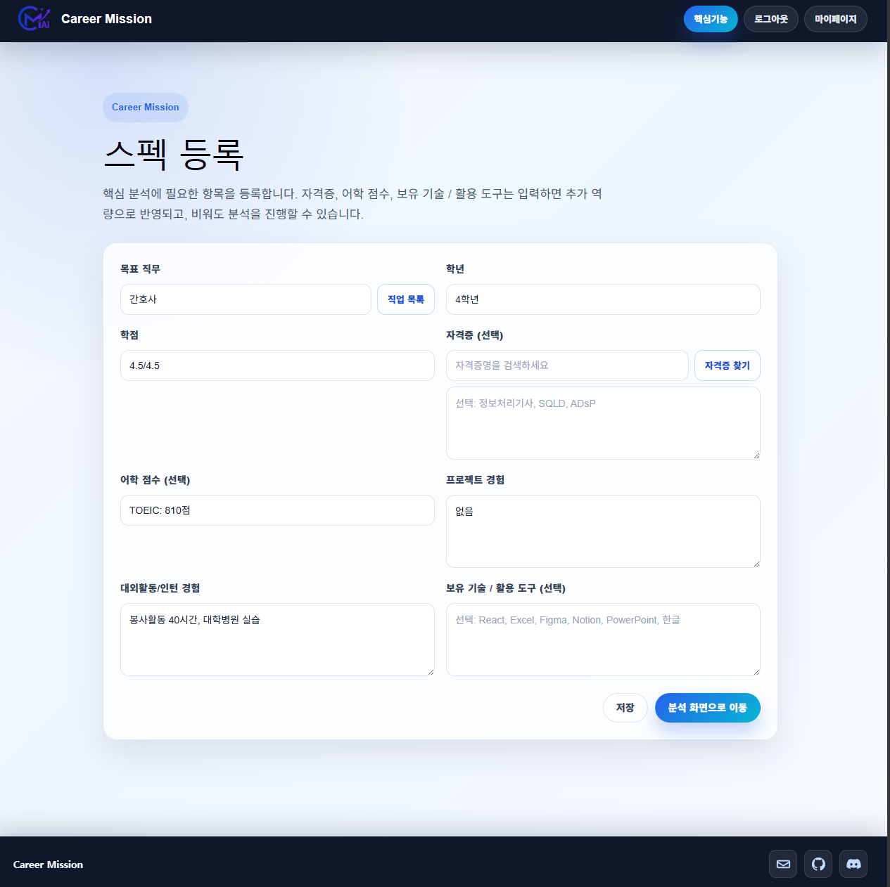
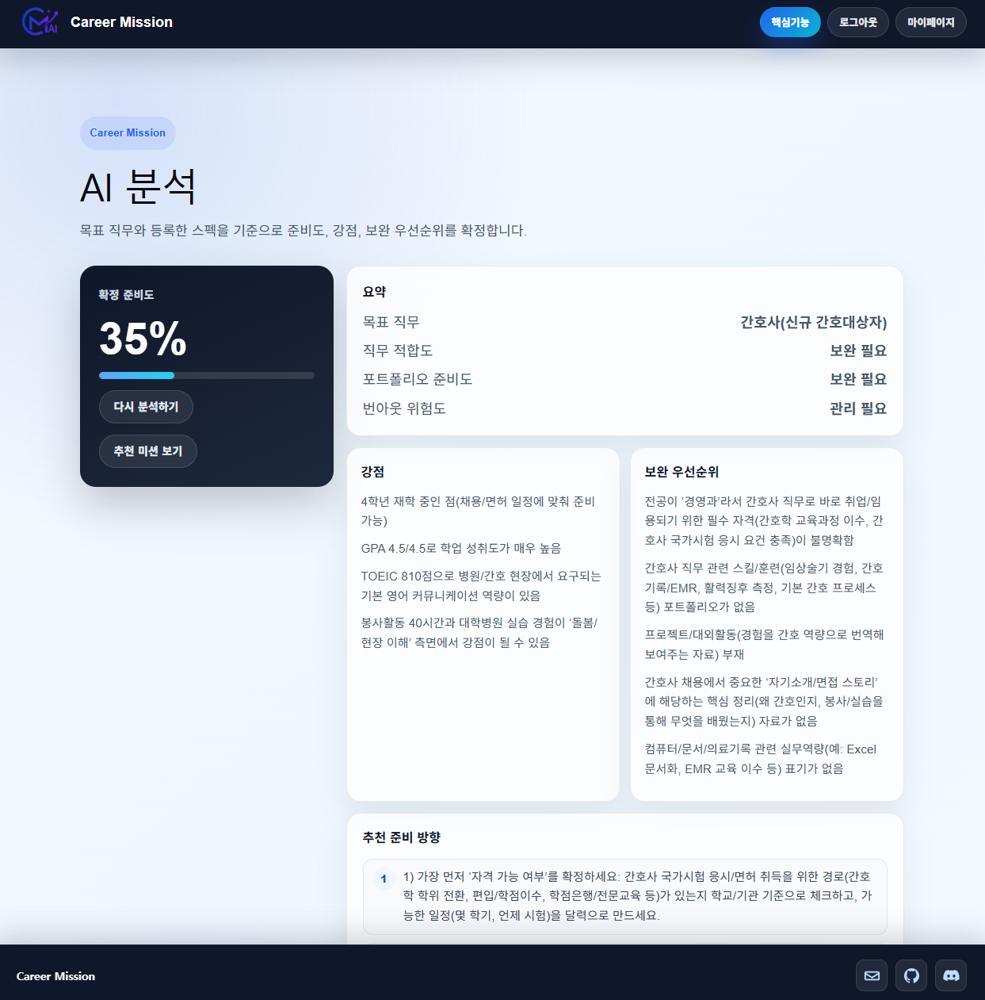
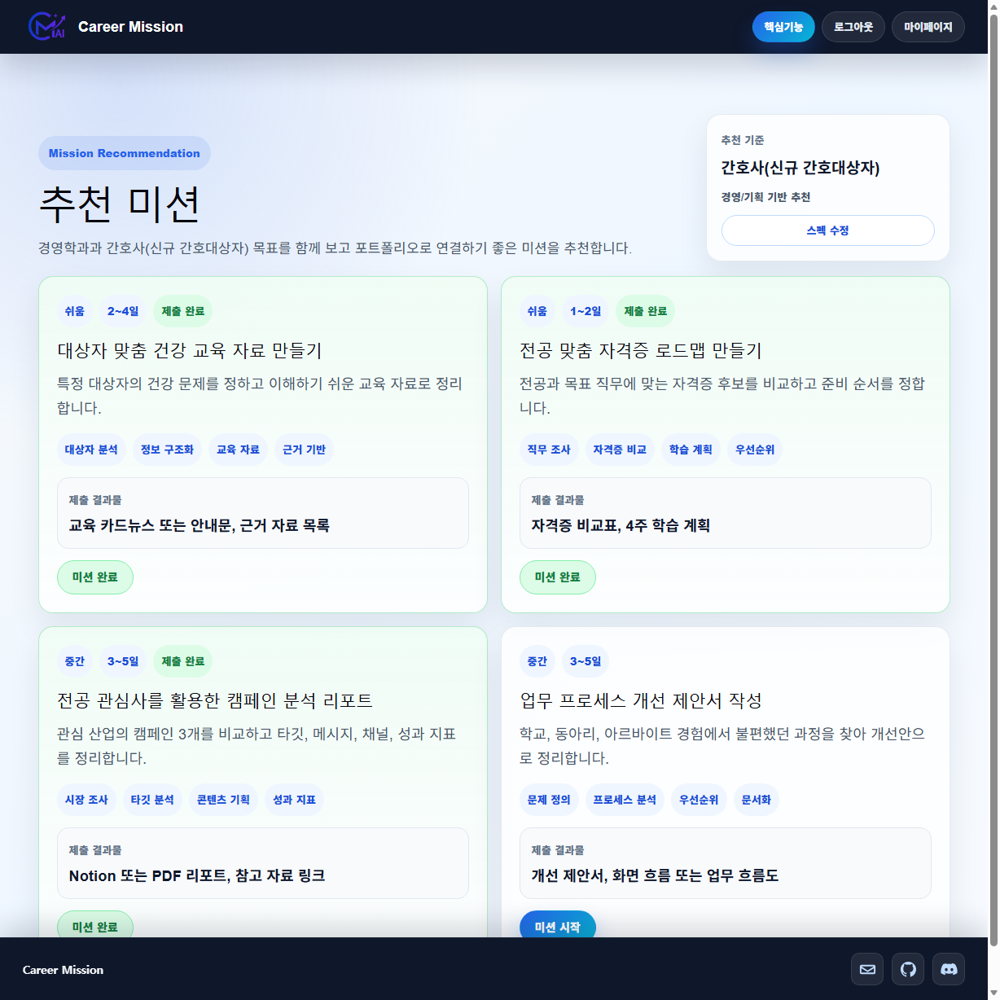
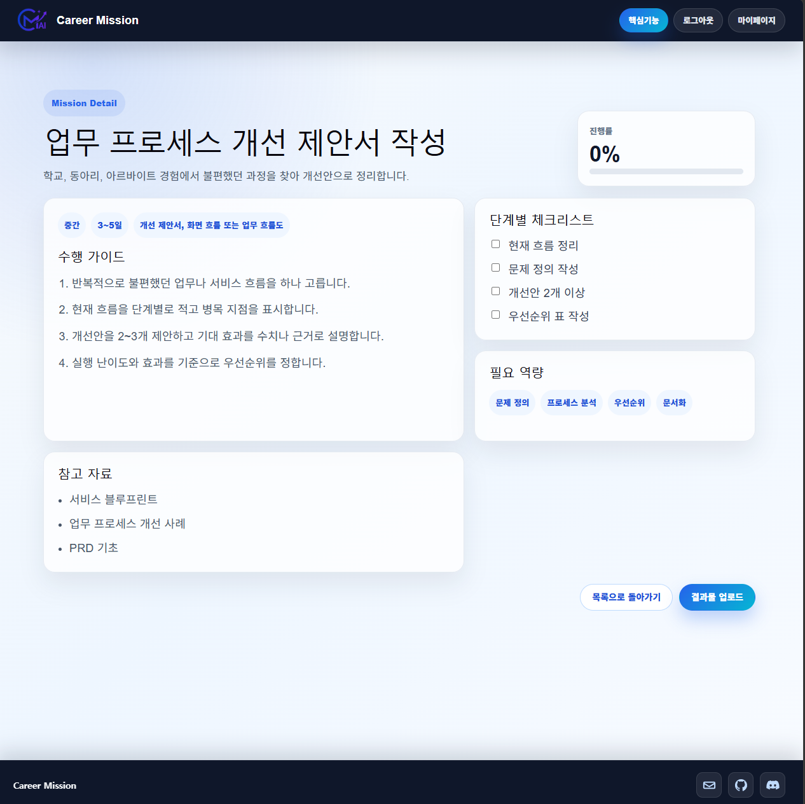
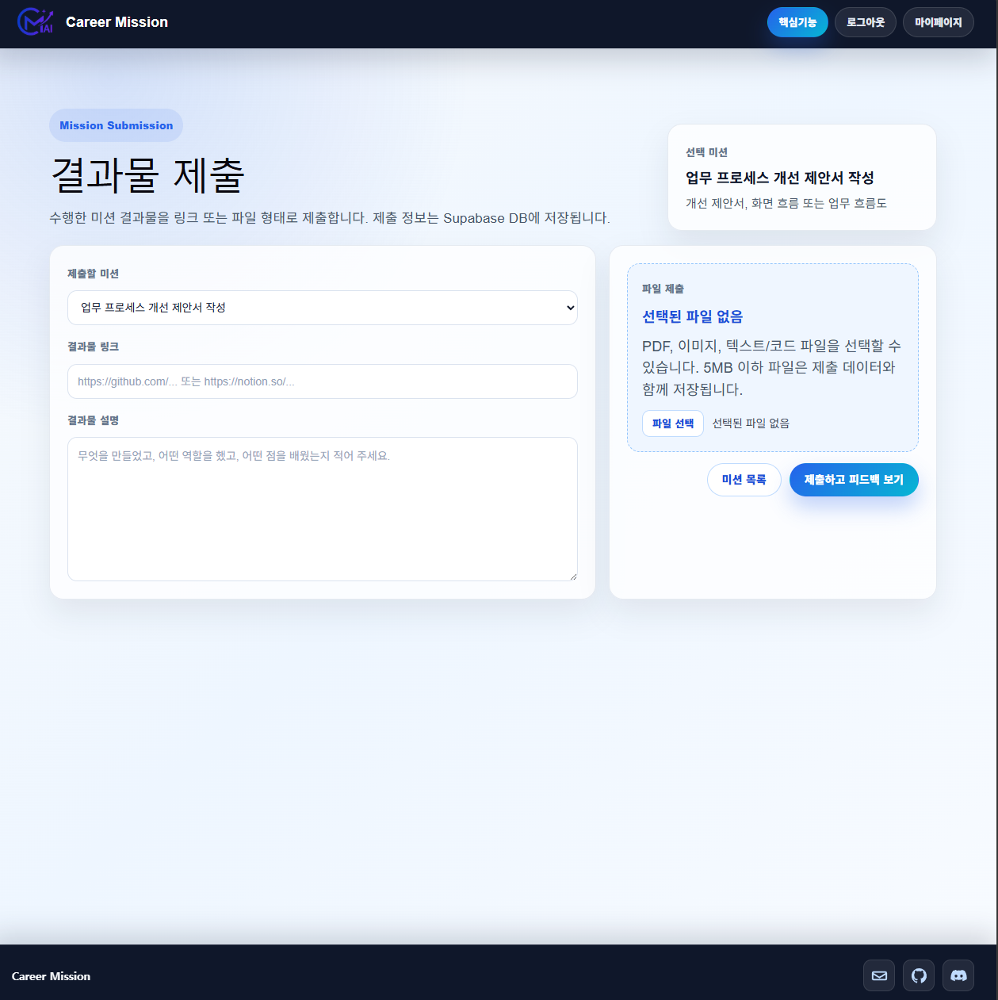
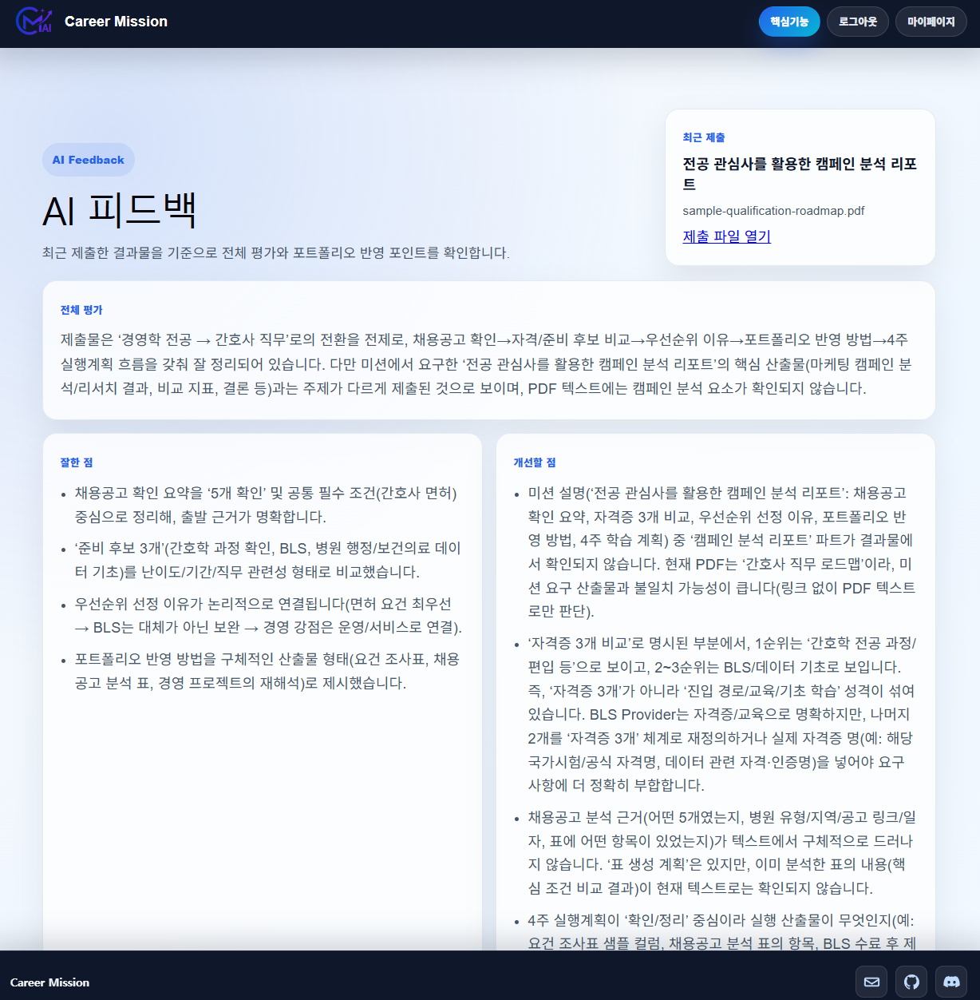
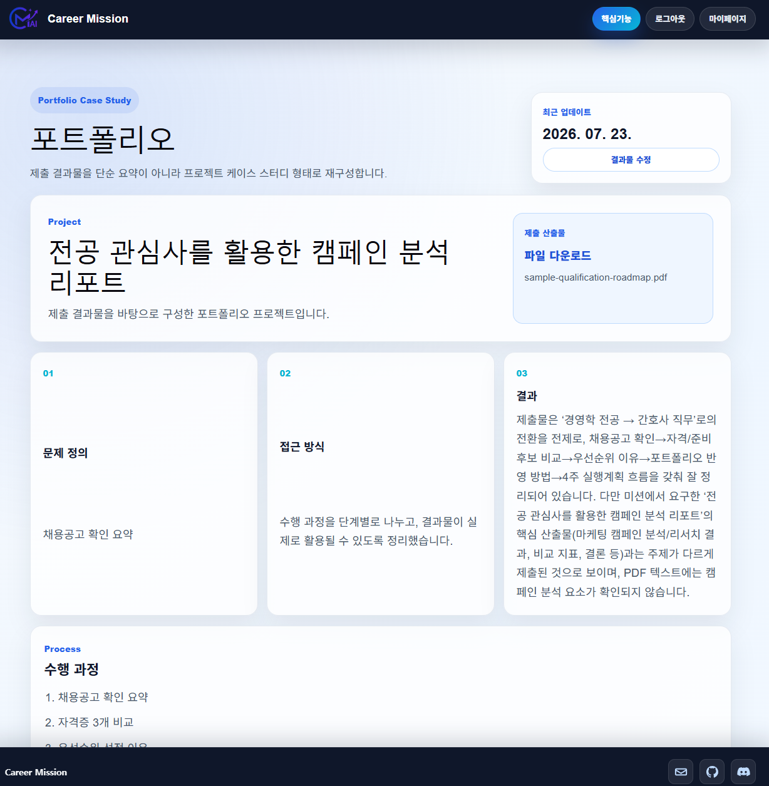
회원가입, 로그인, 이메일 인증, JWT 보호 API
사용자 스펙 저장, 최신 분석 결과 조회와 생성
추천 미션 조회, 체크리스트 진행 상태 저장
결과물 제출, AI 피드백, 포트폴리오 초안
회원가입부터 포트폴리오까지 이어지는 MVP 흐름을 만들었고, 백엔드와 DB 기반까지 준비했습니다.
핵심 사용자 흐름과 주요 화면 구현
Express, Prisma, JWT 기반 백엔드 구조
성장 분석, 컨디션 체크, 휴식 추천 확장
파일 저장, 결제/크레딧, 배포 보안 점검